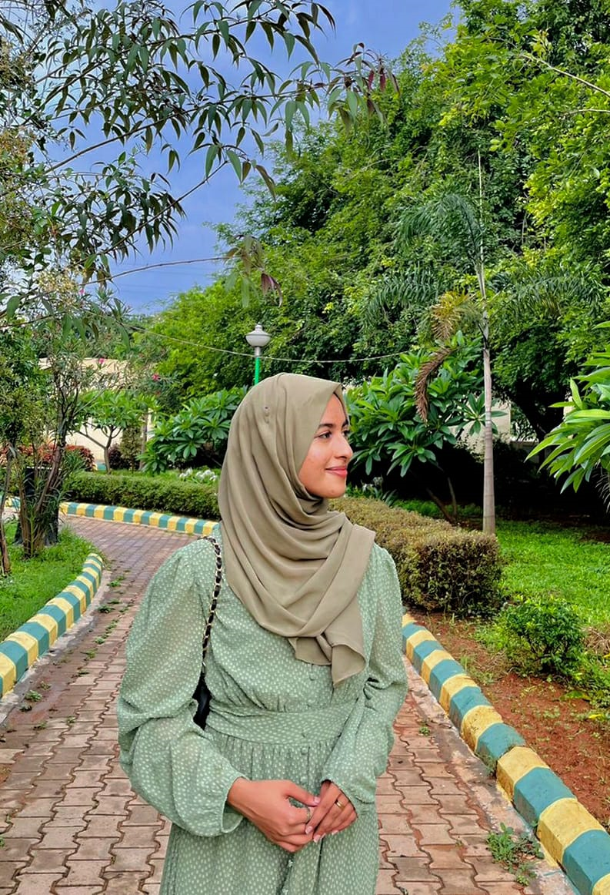

Nameera Shiraz

Summary
A passionate individual currently pursuing my Bachelor’s in Computer Science at KNSIT. Always looking forward to upscale and enhance my skillset. Effectively undertake leadership roles and team management.
Education
KNS Institute of Technology
Bachelor of Science | Computer Science
Shaheen Falcon PU College
Senior secondary education (PCMB)
St. Win Public School
Primary and secondary education
Skills
Soft skills
- Communication
- Teamwork
- Adaptability
- Punctuality
- Time management
- Critical thinking
- Decision making
- Problem Solving Ability
- Motivation
- Flexibility
Hard skills
- HTML
- CSS
- Python
- Java
- C++
- SQL
- JavaScript
Awards
- Acadamic topper KNSIT (2021-22)
- First place in Badminton Doubles inter branch competition KNSIT (2022)
- First place in Throw Ball inter branch competition KNSIT(2022)
Contact me
Hobbies